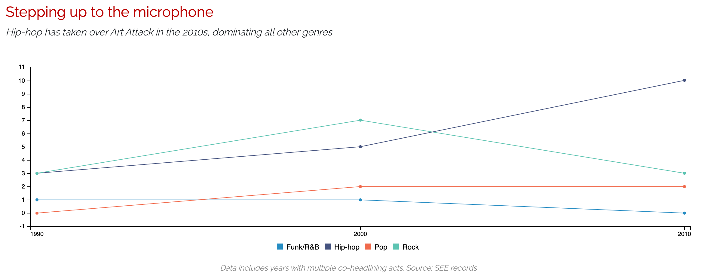

Sean McGoey
Home
About
Resume
Work
Visuals
Contact
Sean McGoey
STORY:
Md. state officials say it’s time to close the digital divide (Capital News Service)
STORY:
Coastal farmers being driven off their land as salt poisons the soil (Capital News Service)
STORY:
Maryland’s political battle lines continue to harden in 2020 (Capital News Service)
STORY:
Yes, 2016 was a surprise, but Trump’s path to 2020 victory seems much steeper (Capital News Service)
STORY:
Maryland ballot drop box locations (Capital News Service)
STORY:
Confusion over federal eviction moratorium led to selective enforcement (Capital News Service)
STORY:
Minding the Gap: Navigating the school-to-prison pipeline in Maryland (University of Maryland class work)
STORY:
SEEing is Believing: A look at UMD's campus entertainment organization (University of Maryland class work)
